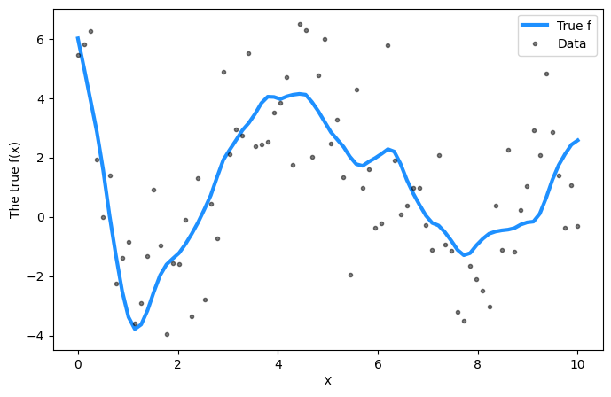
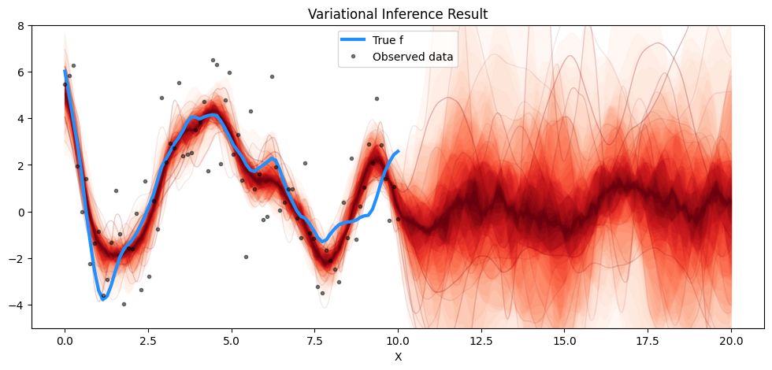

Code
import numpy as np
import pymc as pm
import matplotlib.pyplot as plt
import arviz as az
import pandas as pd
import seaborn as snsLet us begin with Bayes’ rule
\[ p \left( \mathbf{f} | \mathbf{X}, \mathbf{t} \right) = \frac{p \left(\mathbf{t} | \mathbf{f} \right)p \left( \mathbf{f} | \mathbf{X} \right) }{p \left( \mathbf{t} | \mathbf{X} \right) } \]
where assuming a Gaussian likelihood and Gaussian noise model, we have
\[ \textrm{Likelihood}: p \left(\mathbf{t} | \mathbf{f} \right) = \mathcal{N} \left( \mathbf{f} , \sigma^2 \mathbf{I} \right) \]
\[ \textrm{Prior}: p \left( \mathbf{f} | \mathbf{X} \right) = \mathcal{N} \left( \mathbf{0}, \mathbf{K} \right) \]
\[ \textrm{Posterior}: p \left( \mathbf{f} | \mathbf{X}, \mathbf{t} \right) = \mathcal{N} \left( \boldsymbol{\mu}, \boldsymbol{\Sigma} \right) \]
\[ \textrm{Marginal likelihood (or evidence)}: p \left( \mathbf{t} | \mathbf{X} \right) \]
where
\[ \boldsymbol{\mu} = \mathbf{K}\left( \mathbf{X}, \mathbf{X}' \right) \left[ \mathbf{K}\left( \mathbf{X} , \mathbf{X}' \right) + \sigma^2 \mathbf{I} \right]^{-1} \mathbf{t} \]
and
\[ \boldsymbol{\Sigma} = \mathbf{K}\left( \mathbf{X} , \mathbf{X}' \right) - \mathbf{K}\left( \mathbf{X}_{\ast}, \mathbf{X} \right) \left[ \mathbf{K}\left( \mathbf{X} , \mathbf{X}' \right) + \sigma^2 \mathbf{I} \right]^{-1} \mathbf{K}^{T}\left( \mathbf{X} , \mathbf{X}' \right) \]
For non-Gaussian likelihoods, one cannot express the posterior in terms of the mean and covariance terms above. Thus, we require a strategy to do so without having to resort to Markov Chain Monte Carlo. For Gaussian likelihoods, as we have already established, the closed-form posterior above requires inverting a matrix of size \(N \times N\) where \(N\) corresponds to the number of training data points.
The objective of variational inference is to approximate the exact posterior by introducing a variational distribution, \(q \left( \mathbf{f} | \mathbf{X}, \mathbf{t} \right)\). One seeks to minimize the Kullback-Leibler divergence between the exact and variational distribution. This is given by
\[ KL \left[ \underbrace{q_{\phi} \left( \mathbf{f} | \mathbf{X}, \mathbf{t} \right)}_{\textrm{approximate posterior}} || \underbrace{p \left( \mathbf{f} | \mathbf{X}, \mathbf{t} \right)}_{\textrm{true posterior}} \right] \]
Using the definition of the KL divergence, this may be re-written as
\[ \begin{aligned} KL \left[ q_{\phi} \left( \mathbf{f} | \mathbf{X}, \mathbf{t} \right) || p \left( \mathbf{f} | \mathbf{X}, \mathbf{t} \right) \right] & = \mathbb{E}_{q_{\phi} \left( \mathbf{f} | \mathbf{X}, \mathbf{t} \right)} \left[ log \; \frac{q_{\phi} \left( \mathbf{f} | \mathbf{X}, \mathbf{t} \right)}{p \left( \mathbf{f} | \mathbf{X}, \mathbf{t} \right)} \right] \end{aligned} \]
Now using Bayes’ rule, we have
\[ \begin{aligned} KL \left[ q_{\phi} \left( \mathbf{f} | \mathbf{X}, \mathbf{t} \right) || p \left( \mathbf{f} | \mathbf{X}, \mathbf{t} \right) \right] & = \mathbb{E}_{q_{\phi} \left( \mathbf{f} | \mathbf{X}, \mathbf{t} \right)} \left[ log \; \frac{q_{\phi} \left( \mathbf{f} | \mathbf{X}, \mathbf{t} \right)}{\frac{p \left(\mathbf{t} | \mathbf{f} \right)p \left( \mathbf{f} | \mathbf{X} \right) }{p \left( \mathbf{t} | \mathbf{X} \right) }} \right] \end{aligned} \]
\[ \begin{aligned} KL \left[ q_{\phi} \left( \mathbf{f} | \mathbf{X}, \mathbf{t} \right) || p \left( \mathbf{f} | \mathbf{X}, \mathbf{t} \right) \right] & = \mathbb{E}_{q_{\phi} \left( \mathbf{f} | \mathbf{X}, \mathbf{t} \right)} \left[ log \; q_{\phi} \left( \mathbf{f} | \mathbf{X}, \mathbf{t} \right)\right] - \mathbb{E}_{q_{\phi} \left( \mathbf{f} | \mathbf{X}, \mathbf{t} \right)} \left[ log \; p \left(\mathbf{t} | \mathbf{f} \right)p \left( \mathbf{f} | \mathbf{X} \right) \right] + \mathbb{E}_{q_{\phi} \left( \mathbf{f} | \mathbf{X}, \mathbf{t} \right)} \left[ log \; p \left( \mathbf{t} | \mathbf{X} \right) \right] \end{aligned} \]
\[ \begin{aligned} KL \left[ q_{\phi} \left( \mathbf{f} | \mathbf{X}, \mathbf{t} \right) || p \left( \mathbf{f} | \mathbf{X}, \mathbf{t} \right) \right] & = \mathbb{E}_{q_{\phi} \left( \mathbf{f} | \mathbf{X}, \mathbf{t} \right)} \left[ log \; q_{\phi} \left( \mathbf{f} | \mathbf{X}, \mathbf{t} \right)\right] - \mathbb{E}_{q_{\phi} \left( \mathbf{f} | \mathbf{X}, \mathbf{t} \right)} \left[ log \; p \left(\mathbf{t} | \mathbf{f} \right) \right] - \mathbb{E}_{q_{\phi} \left( \mathbf{f} | \mathbf{X}, \mathbf{t} \right)} \left[ log p \left( \mathbf{f} | \mathbf{X} \right) \right] + \mathbb{E}_{q_{\phi} \left( \mathbf{f} | \mathbf{X}, \mathbf{t} \right)} \left[ log \; p \left( \mathbf{t} | \mathbf{X} \right) \right] \end{aligned} \]
\[ \begin{aligned} KL \left[ q_{\phi} \left( \mathbf{f} | \mathbf{X}, \mathbf{t} \right) || p \left( \mathbf{f} | \mathbf{X}, \mathbf{t} \right) \right] & = \mathbb{E}_{q_{\phi} \left( \mathbf{f} | \mathbf{X}, \mathbf{t} \right)} \left[ log \; \frac{ q_{\phi} \left( \mathbf{f} | \mathbf{X}, \mathbf{t} \right)}{ p \left( \mathbf{f} | \mathbf{X} \right)} \right] - \mathbb{E}_{q_{\phi} \left( \mathbf{f} | \mathbf{X}, \mathbf{t} \right)} \left[ log \; p \left(\mathbf{t} | \mathbf{f} \right) \right] + \mathbb{E}_{q_{\phi} \left( \mathbf{f} | \mathbf{X}, \mathbf{t} \right)} \left[ log \; p \left( \mathbf{t} | \mathbf{X} \right) \right] \end{aligned} \]
So, we can express the expectation of the marginal likelihood as
\[ \begin{aligned} KL \left[ q_{\phi} \left( \mathbf{f} | \mathbf{X}, \mathbf{t} \right) || p \left( \mathbf{f} | \mathbf{X}, \mathbf{t} \right) \right] & = KL \left[ q_{\phi} \left( \mathbf{f} | \mathbf{X}, \mathbf{t} \right) || p \left( \mathbf{f} | \mathbf{X}\right) \right] - \mathbb{E}_{q_{\phi} \left( \mathbf{f} | \mathbf{X}, \mathbf{t} \right)} \left[ log \; p \left(\mathbf{t} | \mathbf{f} \right) \right] + \mathbb{E}_{q_{\phi} \left( \mathbf{f} | \mathbf{X}, \mathbf{t} \right)} \left[ log \; p \left( \mathbf{t} | \mathbf{X} \right) \right] \\ KL \left[ q_{\phi} \left( \mathbf{f} | \mathbf{X}, \mathbf{t} \right) || p \left( \mathbf{f} | \mathbf{X} , \mathbf{t}\right) \right] & = KL \left[ q_{\phi} \left( \mathbf{f} | \mathbf{X}, \mathbf{t} \right) || p \left( \mathbf{f} | \mathbf{X} \right) \right] - \mathbb{E}_{q_{\phi} \left( \mathbf{f} | \mathbf{X}, \mathbf{t} \right)} \left[ log \; p \left(\mathbf{t} | \mathbf{f} \right) \right] + log \; p \left( \mathbf{t} | \mathbf{X} \right) \\ KL \left[ q_{\phi} \left( \mathbf{f} | \mathbf{X}, \mathbf{t} \right) || p \left( \mathbf{f} | \mathbf{X}, \mathbf{t} \right) \right] & = log \; p \left( \mathbf{t} | \mathbf{X} \right) + \underbrace{KL \left[ q_{\phi} \left( \mathbf{f} | \mathbf{X}, \mathbf{t} \right) || p \left( \mathbf{f} | \mathbf{X}\right) \right] - \mathbb{E}_{q_{\phi} \left( \mathbf{f} | \mathbf{X}, \mathbf{t} \right)} \left[ log \; p \left(\mathbf{t} | \mathbf{f} \right) \right]}_{-ELBO} \\ KL \left[ q_{\phi} \left( \mathbf{f} | \mathbf{X}, \mathbf{t} \right) || p \left( \mathbf{f} | \mathbf{X} , \mathbf{t}\right) \right] & = log \; p \left( \mathbf{t} | \mathbf{X} \right) - ELBO \left( \phi \right)\\ \end{aligned} \]
Note that the expectation of the marginal likelihood is the expectation of a constant – i.e., it does not change when any variational parameters change – resulting in the \(log \; p \left( \mathbf{t} | \mathbf{X} \right)\) term above sans the expectation. The ELBO acronym above is short for evidence lower bound. It poses a lower bound to the log marginal likelihood, i.e.,
\[ \begin{aligned} ELBO \left( \phi \right) & = log \; p \left( \mathbf{t} | \mathbf{X} \right) - KL \left[ q_{\phi} \left( \mathbf{f} | \mathbf{X}, \mathbf{t} \right) || p \left( \mathbf{f} | \mathbf{X} \right) \right] \end{aligned} \]
As the KL divergence is non-negative, we can write
\[ \begin{aligned} ELBO \left( \phi \right) & \leq log \; p \left( \mathbf{t} | \mathbf{X} \right) \end{aligned} \]
If we maximize the ELBO, for a fixed marginal likelihood, we are minimizing the KL divergence between the true posterior and its approximation. In other words, we need to compute:
For the latter, this approach requires factorizing the likelihood to avoid a \(N\)-dimensional integral.
import numpy as np
import pymc as pm
import matplotlib.pyplot as plt
import arviz as az
import pandas as pd
import seaborn as sns# Training data
n = 80
X = np.linspace(0, 10, n)[:, None]
# Define the true covariance function and its parameters
ell_true = 1.0
eta_true = 3.0
cov_func = eta_true**2 * pm.gp.cov.Matern52(1, ell_true)
mean_func = pm.gp.mean.Zero()
f_true = np.random.multivariate_normal(
mean_func(X).eval(), cov_func(X).eval() + 1e-8 * np.eye(n), 1
).flatten()
sigma_true = 2.0
# True signal is corrupted by random noise
y = f_true + sigma_true * np.random.randn(n)
## Plot the data and the unobserved latent function
fig = plt.figure(figsize=(8, 5))
ax = fig.gca()
ax.plot(X, f_true, "dodgerblue", lw=3, label="True f")
ax.plot(X, y, "ok", ms=3, alpha=0.5, label="Data")
ax.set_xlabel("X")
ax.set_ylabel("The true f(x)")
plt.legend();
with pm.Model() as model:
ell = pm.Gamma("ell", alpha=2, beta=1)
eta = pm.HalfCauchy("eta", beta=5)
cov = eta**2 * pm.gp.cov.Matern52(1, ell)
gp = pm.gp.Marginal(cov_func=cov)
sigma = pm.HalfCauchy("sigma", beta=5)
y_ = gp.marginal_likelihood("y", X=X, y=y, sigma=sigma)with model:
vi = pm.fit(method='advi')Finished [100%]: Average Loss = 179.46vi_elbo = pd.DataFrame(
{'log-ELBO': -np.log(vi.hist),
'n': np.arange(vi.hist.shape[0])})
_ = sns.lineplot(y='log-ELBO', x='n', data=vi_elbo)
# Test values
X_new = np.linspace(0, 20, 600)[:, None]
advi_trace = vi.sample(10000)
# add the GP conditional to the model, given the new X values
with model:
f_pred = gp.conditional("f_pred", X_new)
with model:
pred_samples = pm.sample_posterior_predictive(
advi_trace.sel(draw=slice(0, 50)), var_names=["f_pred"] # using 50 samples from the chain
)Sampling: [f_pred]# plot the results
fig = plt.figure(figsize=(12, 5))
ax = fig.gca()
# plot the samples from the gp posterior with samples and shading
from pymc.gp.util import plot_gp_dist
f_pred_samples = az.extract(pred_samples, group="posterior_predictive", var_names=["f_pred"])
plot_gp_dist(ax, samples=f_pred_samples.T, x=X_new)
# plot the data and the true latent function
plt.plot(X, f_true, "dodgerblue", lw=3, label="True f")
plt.plot(X, y, "ok", ms=3, alpha=0.5, label="Observed data")
# axis labels and title
plt.xlabel("X")
plt.ylim([-5, 8])
plt.title("Variational Inference Result")
plt.legend();